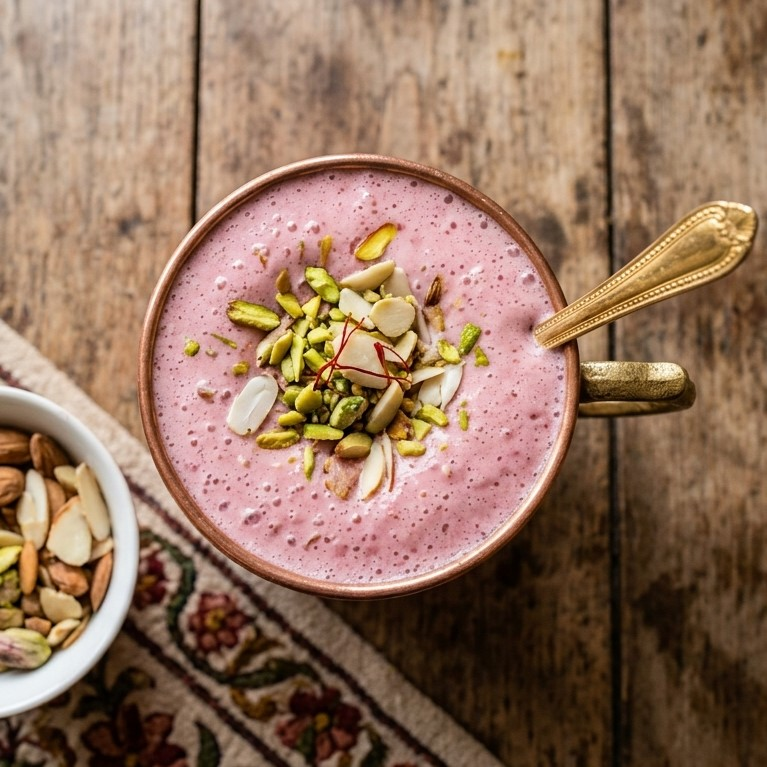

| Ingredient | Qunatity | Purpose |
|---|---|---|
| cold water | 2 cups | Base liquid used for boiling and shock-chilling to extract color |
| Ice cubes | 1/2 cup | Added during shock-brewing to enhance the signature pink shade |
| Baking soda | 1/4 tsp | Reacts with tannins under heat to produce the deep pink/red color |
| Green Cardamom Pods | 3–4 pods (lightly crushed) | Infuses floral spice aroma |
| Star Anise | 1 whole | Adds a subtle warm licorice fragrance |
| Cinnamon Stick | 1 small piece | Provides background woody warmth |
| Whole milk | 2 cups | Creates the creamy texture and pale pink final tone |
| Sugar or Salt | to taste | Sweetened commercially; traditionally prepared salty (Noon Chai) |
| Kashmiri Green Tea Leaves | 2 tsp | Specialized loose tea leaves that release chlorophyll and tannins |
| Crushed Pistachios & Almonds | 2 tbsp (finely chopped) | Classic aromatic garnish served on top |

Preparation Time: 5 minutes
Cooking Time: 30–40 minutes
Step-by-step Instructions